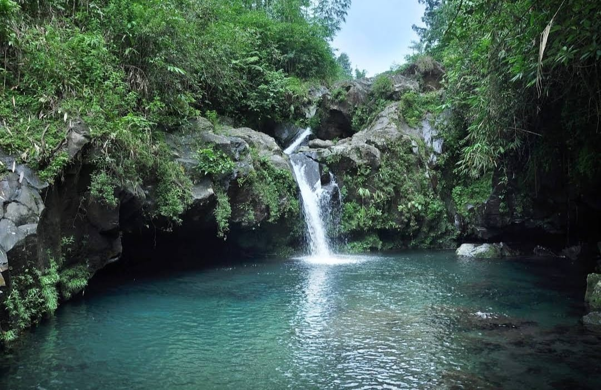

Telaga Sunyi
Telaga Sunyi merupakan salah satu objek wisata yang ada di kawasan Wanawisata Baturraden, Purwokerto, dan masih satu kawasan dengan Hutan Pinus Limpakuwus Banyumas. Kawasan wanawisata ini memiliki luas sekitar 250 hektar dan terletak di lereng Gunung Slamet, gunung tertinggi sekaligus gunung terbesar di Provinsi Jawa Tengah.
Selain objek wisata telaga ini juga terdapat objek wisata lainnya, seperti Curug Gede, Curug Bayan, Pancuran Pitu, Pancuran Telu, dan Taman Rekreasi Baturraden. Telaga ini memiliki kedalaman sekitar 5 meter dan luas sekitar 1 hektar. Airnya sangat jernih dan berwarna kebiruan. Di sini, Anda bisa melihat air terjun yang mengalir langsung ke telaga. Ketinggian air terjun ini sekitar 10m meter dan memiliki debit air yang cukup deras. Meskipun begitu, telaga ini relatif aman untuk berenang atau menyelam.
Lokasi Telaga Sunyi
Telaga Sunyi terletak di Limpakuwus, Kecamatan Sumbang, Kabupaten Banyumas, Jawa Tengah. Lokasi ini kira-kira berjarak 16 km dari pusat Kota Purwokerto atau sekitar 30 menit perjalanan dengan kendaraan. Untuk mencapai lokasi telaga ini, Anda bisa mengambil rute dari Alun Alun Purwokerto lalu ke Jalan Pol. Soemarto dan mengikuti jalan ke arah Raya Baturraden. Setelah itu mengarah ke kawasan Wanawisata Baturraden. Setelah masuk gerbang utama, Anda harus berjalan kaki sejauh 2,5 km atau sekitar 15 menit menyusuri jalan setapak yang berada di sebelah kanan gerbang. Anda akan melewati persawahan, hutan, dan sungai kecil sebelum sampai di telaga.
Keindahan Telaga Sunyi
Telaga sunyi memiliki beberapa keindahan tersendiri diantara lain
- telaga dengan air biru toska yang super jernih
- spot berenang dan snorkeling
- air terjun mini
- suasana yang tenang dan masih alami
- cerita mistis di balik keindahan telaga
Tiket masuk Telaga Sunyi
Berbeda dari objek wisata alam pada umumnya yang biasanya gratis, tiap pengunjung objek wisata alam ini akan dikenai biaya masuk. Harga tiket masuk Telaga Sunyi masih relatif murah, hanya Rp15.000,00 per orang. Retribusi/Tarif/Tiket Masuk Rp15.000,00 Tiket masuk ini sudah termasuk biaya kendaraan dan fasilitas penampung. Namun jika Anda ingin snorkeling di tempat wisata Limpakuwus Baturraden ini, akan ada biaya tambahan untuk menyewa peralatannya.
Related Post